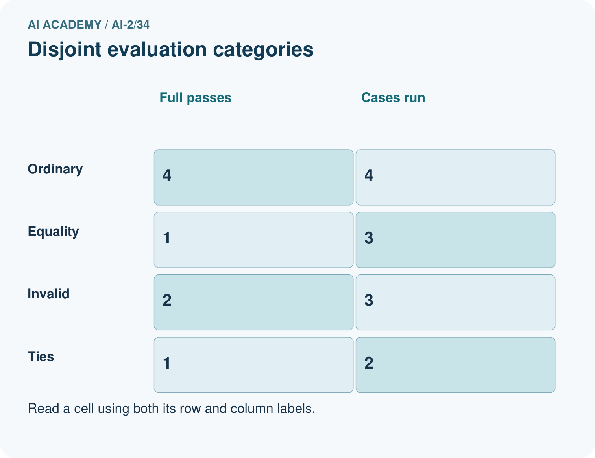
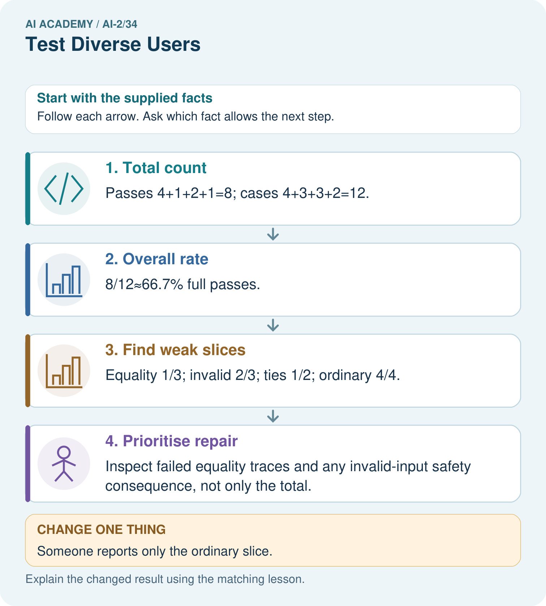
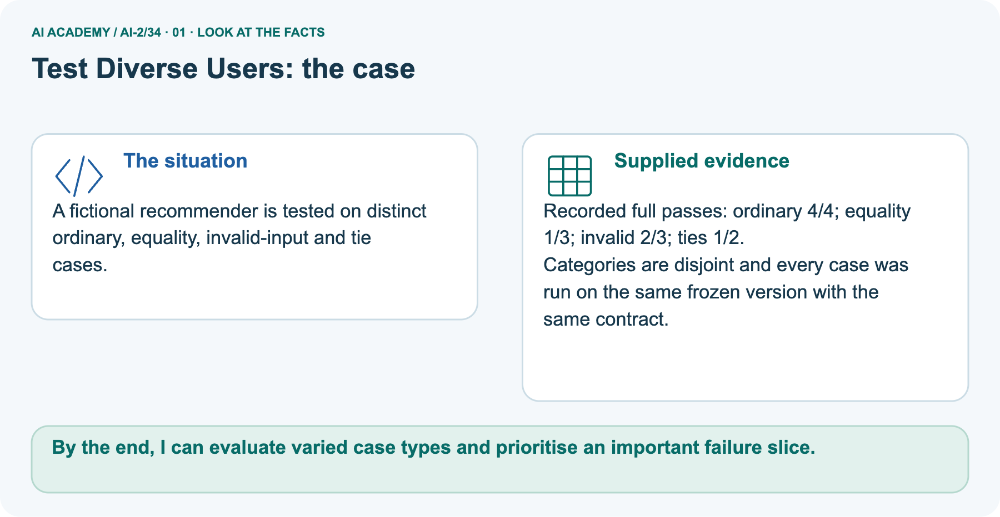
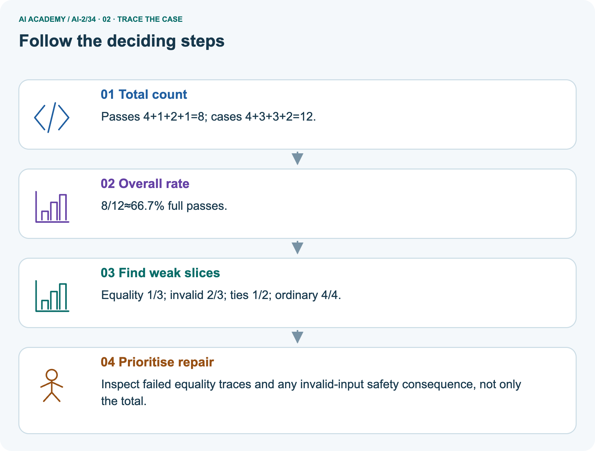
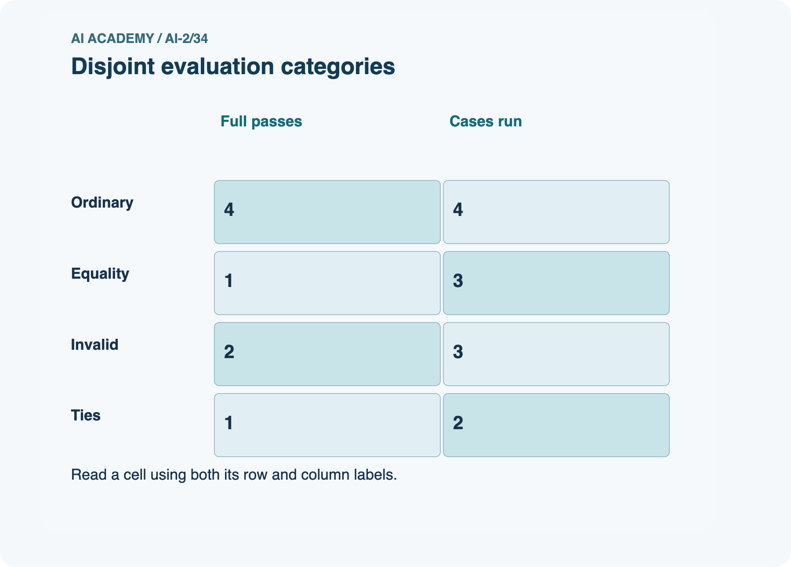
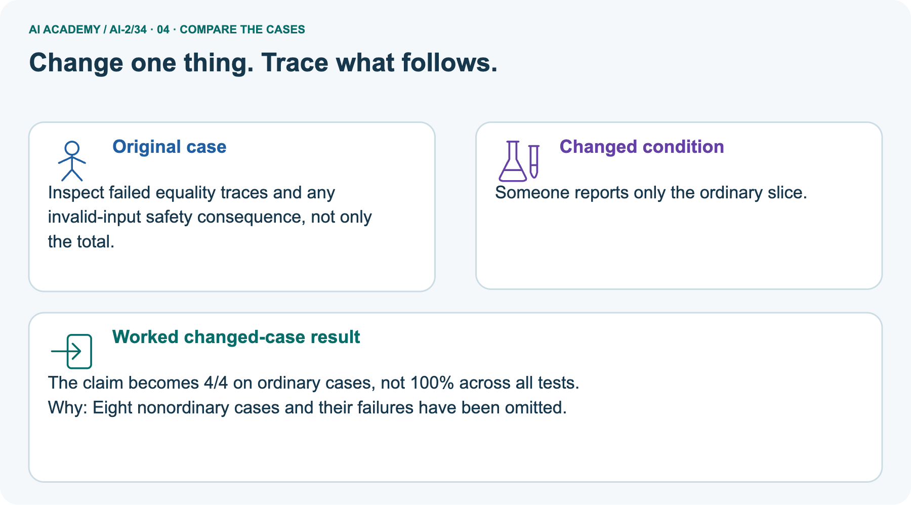
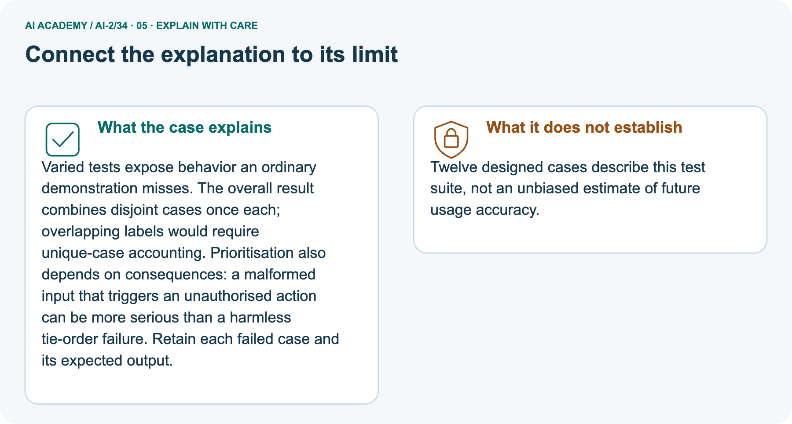
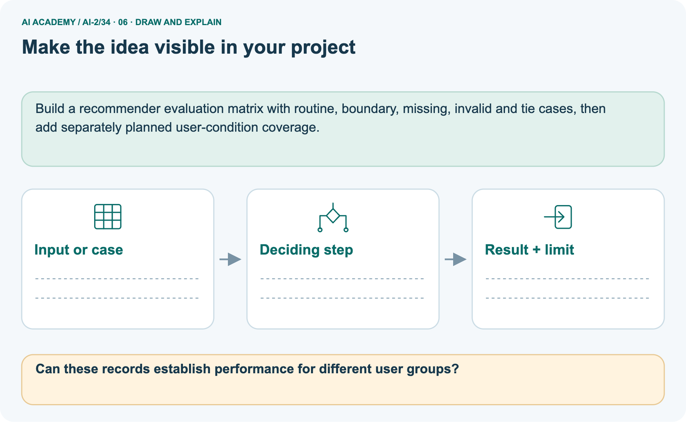

AI Academy · Level 2 · Grade 7 · Week 34 · Teacher guide
Test Diverse Users
Learn to understand, design, build, test and explain AI systems responsibly.
Project: Transparent Book Recommender
Teacher guide · 1 of 9
Test Diverse Users
Prepare Test Diverse Users: check the target, prerequisites, resources and adaptable teaching schedule.
Teach the learning cycle
Primary target: Evaluate across varied cases
| Session | Sequence and minutes | Resources |
|---|---|---|
| Session 1 · Understand · 45 min | 0–7: recall and prerequisite; 7–15: inspect the concrete case and predict; 15–30: teacher models the worked trace; 30–40: learners explain a step using the text and visual; 40–45: check the core idea. | Use Your mission, Notice the evidence, See how it works, Compare the cases, Words that unlock the idea and Follow a worked example; record the brief recall in the workbook. |
| Session 2 · Practise · 45 min | 0–5: retrieve the procedure; 5–15: W2 completion practice; 15–23: explain and check with a partner; 23–30: each learner answers the misconception check; 30–40: targeted reteaching or a harder variation; 40–45: prepare the investigation. | Use Find and repair a mistake, Practise together, Run the investigation and Build your understanding; use the matching workbook W2 and misconception check. |
| Session 3 · Investigate and transfer · 45 min | 0–5: retrieve the decision rule; 5–20: investigate or trace; 20–30: start the independent case; 30–38: connect the project; 38–43: act on feedback; 43–45: plan the return check. | Use Run the investigation, Connect your project, Show what you know, Study a complete case and Try a new case independently. Allow extra time for the full task set. Use a coding lab only when this week actually provides one; Your lesson route is the planning section. |
This is a starting allocation of 135 minutes, not a validated duration. Preserve all named topics. Schedule extra time for connected examples, the full investigation, independent cases and project building.
Repeated copies of a case share one recorded attempt; they are not new evidence.
Retrieval answer guidance
Build the Recommender
Without opening the old lesson, explain one key idea from Build the Recommender. Give an example and a mistake that the idea helps you avoid.
Look for: Implement a deterministic recommender
Reference example, not the only acceptable wording: Both score 8 and qualify; A is alphabetically first under the tie rule.
Permissions and Human Review
Without opening the old lesson, explain one key idea from Permissions and Human Review. Give an example and a mistake that the idea helps you avoid.
Look for: Explain the mechanism and terminology of least privilege and tool scopes
Reference example, not the only acceptable wording: Teacher explanation: Least privilege grants only capabilities required by the task. Tool access should include resource and operation scope, not merely a broad tool name.
A reporting assistant may lookup public rooms but may not write records, send messages or read teacher notes. Check actor, operation and resource before executing a proposed call.
Prompt Experiments
Without opening the old lesson, explain one key idea from Prompt Experiments. Give an example and a mistake that the idea helps you avoid.
Look for: Explain the mechanism and terminology of controlled prompt experiments
Reference example, not the only acceptable wording: Teacher explanation: A prompt experiment compares complete specifications using the same task cases.
Define success before inspecting outputs; change one intended instruction and preserve other settings. Evaluate both prompts on paired cases with fixed model/version, source records, output contract and scoring rubric.
Use development results for selection, then reserve new final cases. Score each case rather than counting attractive sentences.
Use the student module and workbook section with this exact week title. The worked case, independent question and answers below form one aligned lesson sequence.
What the learner must demonstrate
The recommender succeeds on 9/10 mystery requests and 2/5 poetry requests. Compute total and separate rates. A team reports only 11/15. Explain what that hides.
Concept to explain
Evaluation must include ordinary, edge, and underserved cases.
| Term | Meaning |
|---|---|
| test profile | A description of the kinds of cases and conditions included in an evaluation. |
| edge case | An unusual, boundary or difficult input that can reveal a failure hidden by routine examples. |
| underserved | Receiving less adequate support or performance than the intended service requires. |
| fairness concern | A reason to examine whether a system creates unjustified differences in treatment or outcomes. |
Prepare the class
Use the supplied scenario, student illustrations and blank paper. For numeric work, offer counters or a calculator after learners show the setup. Fictional records are supplied; personal data and paid accounts are unnecessary.
Alternative compact allocation
This compact option is not the full-week schedule. Use the main teaching cycle and allow extra sessions for the investigation, independent work and project.
Allow 80 minutes: recall 8; explanation 12; worked demonstration 15; guided practice 20; independent assessment 15; project and reflection 10. Extend the lab into a second session when needed.
Preparation for the connected explanation
Teach Week 34 as a two-session investigation using fictional data. A fictional chooser passes 5 of 6 development checks but fails its only tie case. An overall pass rate can hide that concentrated weakness.
Evaluate ordinary, boundary, invalid, empty and tie cases separately, using requirements rather than duplicated versions of one easy example.
Assess the three stated outcomes through the independent task, not by copying the worked result.
Readiness answer
No; they have become part of development evidence.
Python 3 editor with a fresh local practice file
Paper trace table and the student workbook
Fictional input records from this lesson; no real student identifiers
End goal for the pictorial case
By the end, I can evaluate varied case types and prioritise an important failure slice.
This added worked case illustrates the week’s main idea. Retain all original and connected topics; schedule its practice within the teaching cycle.
Teacher guide · 2 of 9
Explain the mechanism
Model Test Diverse Users using the supplied case, labelled mechanism and reasoning. Make the scope of each conclusion explicit.
Input → Process → Output
Trace the information. At each stage, ask what changed and how you could test it.
Which stage could fail even when the other two are correct? Explain:
Predict first. Then check each step. A correct answer without visible reasoning is incomplete evidence.
1. Profiles: typical reader; very short-book need; bilingual preference; screen-reader format need.
2. Run the same frozen recommender for all four.
3. Record expected, actual, score evidence, and issue type.
4. Do not average away one group’s repeated failure.
Recalculate, retrace, or restate the reasoning in your own representation:
CHECK Did the evidence answer the exact question? Did the total, path, or source record stay consistent?
Concrete teaching case
The teaching case
A recommender satisfies 5/6 adventure requests and 3/6 poetry requests.
The teaching case
Compare and investigate.
Exact explanation to model
Why the result follows
Rates are 5/6 and 3/6. Inspect catalogue coverage, labels and scoring; twelve tests do not establish cause.
Explain the added worked example
Explain the added worked example · 1
A fictional chooser passes 5 of 6 development checks but fails its only tie case. An overall pass rate can hide that concentrated weakness.
Evaluate ordinary, boundary, invalid, empty and tie cases separately, using requirements rather than duplicated versions of one easy example.
The script reports 5 and 6. About 83.3 percent of these checks pass, but that is not an accuracy estimate for all future use.
The cases were deliberately chosen, their frequencies are artificial, and each category has few cases.
Key terms
| Term | Meaning |
|---|---|
| Evaluation set | Cases used to assess a specified version |
| Failure category | A type of scenario where an expected result is missed |
| Pass rate | Passing cases divided by executed cases |
| Coverage | The variety of requirements and conditions tested |
Model the reasoning aloud
Use the complete worked example below before asking learners to complete W2. Reveal a small part, invite a prediction, then explain the deciding step.
These teacher notes contain solutions; do not reveal the independent case answer during modelling.
| Thinking move | Teacher prompt |
|---|---|
| Plan | What is given? What is the question? Which procedure fits these facts? |
| Do | Point to each input and intermediate step in the worked trace. Name the rule that allows the next step. |
| Check | Does the output answer the question? Which assumption or limitation prevents a larger claim? |
Use the diagram and verbal explanation together. Ask learners to match a sentence to a specific visual step; do not assign learners fixed visual or auditory learning styles.
A pictorial worked case: Test Diverse Users
A fictional recommender is tested on distinct ordinary, equality, invalid-input and tie cases.
The facts we will use
Supplied facts
Recorded full passes: ordinary 4/4; equality 1/3; invalid 2/3; ties 1/2.
Supplied facts
Categories are disjoint and every case was run on the same frozen version with the same contract.


Read the picture one step at a time
Why this result follows
Why the result follows
Varied tests expose behavior an ordinary demonstration misses. The overall result combines disjoint cases once each; overlapping labels would require unique-case accounting.
Prioritisation also depends on consequences: a malformed input that triggers an unauthorised action can be more serious than a harmless tie-order failure. Retain each failed case and its expected output.
What this example does not establish
Keep the stated limit
Twelve designed cases describe this test suite, not an unbiased estimate of future usage accuracy.
Change one thing in the pictured case
Change one thing
Change: Someone reports only the ordinary slice.
Predicted result
Prediction: The claim becomes 4/4 on ordinary cases, not 100% across all tests.
Why the result follows
Reason: Eight nonordinary cases and their failures have been omitted.
Ask while showing the picture
Ask while showing the picture · 2
Cover the result. Ask learners to name the inputs and predict the next step. Uncover one step, connect the icon to the actual procedure, and explain its evidence. Then change the supplied condition and compare.
The picture is a representation; it does not document execution of a real AI model.
Teacher guide · 3 of 9
Demonstrate and guide practice
Demonstrate Test Diverse Users, reduce support deliberately and check individual reasoning before discussing answers.
Board sequence
1. Put the facts on the board
Write the given facts: A recommender satisfies 5/6 adventure requests and 3/6 poetry requests.
2. State the decision to explain
Write the question to explain: Compare and investigate.
3. Reveal the worked reasoning
Reveal after predictions: Rates are 5/6 and 3/6. Inspect catalogue coverage, labels and scoring; twelve tests do not establish cause.
Hold back the independent task
Keep for an independent attempt: A recommender serves 6 of 6 easy-book requests but 1 of 4 advanced-book requests. Report both results and identify the next test priority.
Classroom dialogue
Ask the class
Ask: Which facts are given, and which would we have to assume? Learners mark relevant details before discussing answers.
Language to model
Say: Predict first. Show the rule, information path or calculation that would produce the result. A correct guess is not yet an explanation.
Reveal reasoning one step at a time. Explain why a tempting alternative fails. Write units and denominators for arithmetic, trace conditions for decisions, and identify supporting sources for claims.
In pairs, one learner solves while the other checks evidence; exchange roles. Remove the worked answer before independent assessment.
Model these guided questions
15/16 pass, but no new condition was tested. The larger fraction is misleading as evidence of broader quality. Exit: The old case is now a regression/development case.
Document the fix and use fresh reserved cases for a new independent final check.
Case-specific teaching sequence
| Stage | Teacher action |
|---|---|
| Session 1 start to 7 minutes | Retrieve the prerequisite and explain the purpose in the opening section. |
| 7 to 20 minutes | Read the worked example and diagram; ask learners to trace each step aloud. |
| 20 to 33 minutes | Complete W1 and W2, then compare predictions with observed results. |
| 33 to 45 minutes | Collect the guided prediction before running; discuss a mismatch and its cause. |
| Session 2 start to 8 minutes | Retrieve the main rule without showing the previous answer. |
| 8 to 20 minutes | Use W3 to diagnose and repair the stated failure; rerun an earlier case. |
| 20 to 35 minutes | Collect W4 independently, including code or plan, predictions and explanations, before hints. |
| 35 to 45 minutes | Discuss W5 and the exit; use the fresh retry when support was needed. |
Reduce help deliberately
Completion practice
Completion task: Name five distinct categories for the chooser evaluation.
Reasoning to listen for
Teacher check: Ordinary selection, duration boundaries, invalid records, empty/no-match input and ties/order reversal.
Start by identifying the given inputs together. Leave the intermediate steps blank. If needed, model one step, then withdraw that help on the next step. Move to a full trace only when the partial trace is understood.
For partners, alternate explainer and checker; collect a response from every learner before discussion.
Individual reasoning check
Use the worked case for Evaluating varied cases. Proposed explanation: “A successful run proves the conclusion”. Decide whether this explanation is supported.
Point to the step or supplied fact that decides; explain your repair if needed.
Expected repair
Expected correction: For a rule-based chooser, evaluate conformance to its policy separately from whether users find suggestions useful. Neither a pass fraction nor an invented satisfaction score proves educational benefit.
Collect explanations, not only yes/no votes. If a misunderstanding is common, re-model the relevant step for the class.
If it affects a few learners, give a short targeted group explanation while others solve a more demanding variation.
Pictorial practice question
Can these records establish performance for different user groups?
Reasoned teacher answer
No. They describe input-case types. No user-group membership or group-specific outcomes were supplied.
Changed-case reasoning: The claim becomes 4/4 on ordinary cases, not 100% across all tests. Eight nonordinary cases and their failures have been omitted.
Collect each learner’s explanation before discussion. Use the first missing connection between input, deciding step and result to choose support. This question is worked-case practice, not fresh mastery evidence.
Teacher guide · 4 of 9
Run the weekly evidence lab
Run the Test Diverse Users investigation and use the first unsupported step to choose a teaching response.
Words You Can Use to Reason
A definition matters when you can recognize the idea, use it, and contrast it with a near-miss.
Predict → Test → Record → Explain
Keep expected and actual results separate. Surprises are useful data when recorded honestly.
Create four meaningfully different profiles, predict outcomes, run, classify failures, and compare results by profile rather than only overall.
What did the hardest test teach you that the normal test did not?
Make the lab runnable
Use the concrete case as the shared normal case and the independent question as a second case. Each pair creates a boundary or missing-information case and predicts its result before testing.
Keep the expected result separate from an observed mistake.
| Record | What to capture |
|---|---|
| Input or evidence | Exact data, instruction or claim |
| Expected result | Answer or safe fallback declared before the run |
| Observed result | Actual result, including errors |
| Explanation | Rule, calculation or evidence explaining the outcome |
| Next test | One justified change and a new prediction |
Diagnose and reteach
For guessing, return to given facts and request a trace. For vocabulary without application, use one example and one non-example. For arithmetic errors, check the setup before the calculation.
Finish with a different uncoached case before recording mastery.
Address these additional misconceptions
A successful run proves the conclusion: For a rule-based chooser, evaluate conformance to its policy separately from whether users find suggestions useful.
Neither a pass fraction nor an invented satisfaction score proves educational benefit.
Matching the example is enough: Require the new W4 case, explicit predictions and an explanation. Fresh retry: ordinary 2/2, empty 0/1, boundary 2/2 gives 4/5 overall; the empty case still fails.
Require the failure record and a fresh-case plan.
A convenient shortcut preserves meaning: Hiding the tie failure in an average conceals an unmet requirement. Preserve the failed input, expected result, actual result and version.
If you repair using it, classify it as development/regression evidence and reserve new final cases.
Match the support to the first error
| What the response shows | Next teaching action |
|---|---|
| Missing or misread facts | Read the case aloud, mark supplied versus unknown facts, and let the learner restate it. |
| Wrong procedure | Return to the deciding step in the worked case. Contrast it with the proposed incorrect explanation. |
| Arithmetic or implementation error | Trace intermediate values or lines; preserve the first mismatch and retry that step. |
| Correct result without a reason | Ask for a trace and a changed case before marking independent understanding. |
| An unsupported wider claim | Ask which supplied evidence supports the claim and which further observation would be needed. |
Offer an oral explanation, drawing, enlarged visual or fewer examples when that removes a reading/writing barrier. Keep the same reasoning goal.
Stretch secure learners by changing a boundary or assumption and asking them to defend the effect, not simply by assigning more of the same questions.
Teacher guide · 5 of 9
Assess and explain the answers
Use the Test Diverse Users questions, teacher keys and criteria after the relevant attempts. Previously discussed cases are practice; protect the separately selected independent task.
Worked case answer
Teacher key · Worked case answer
Rates are 5/6 and 3/6. Inspect catalogue coverage, labels and scoring; twelve tests do not establish cause.
Independent question
Independent question · withhold the key
A recommender serves 6 of 6 easy-book requests but 1 of 4 advanced-book requests. Report both results and identify the next test priority.
Expected independent answer
Teacher key · Expected independent answer
Easy requests: 6/6; advanced: 1/4. Investigate advanced requests and inspect their failures. The combined 7/10 hides this difference.
What counts as evidence
| Criterion | 0 points | 1 point | 2 points |
|---|---|---|---|
| Result | Incorrect or absent | Partly correct | Correct with necessary conditions |
| Reasoning | No supporting trace | Some steps | Clear mechanism, calculation or source support |
| Limit | Overclaims certainty | Vague limitation | Relevant uncertainty or missing fact |
| Transfer | Copies without adapting | Adapts with prompts | Solves a changed case independently |
Use 6/8 as a classroom checkpoint, with 2 required for both Result and Reasoning. This is a proposed teaching rule, not a validated certification threshold.
Do not count a coached answer as independent mastery; correct unsafe or unsupported claims regardless of total.
Feedback
Ask the learner to find the evidence that challenges this claim: “A single overall score describes every user's experience.” Keep the first attempt and an uncoached retry separate.
Original transfer answer
Teacher key · Original transfer answer
Overall is about 73.3%; mystery is 90%; poetry is 40%. The total hides weaker poetry performance.
Investigate catalogue coverage, labels and scoring without assuming the rates identify the cause; small denominators limit conclusions.
Explanations for the additional workbook examples
W1 Read denominators
Workbook question · W1
A report says 8 of 10 tests pass, including 0 of 2 invalid-input cases. What is the important weakness?
Teacher reasoning · W1
Invalid-input handling fails both tested cases even though the overall pass fraction is 80 percent.
W2 Plan coverage
Workbook question · W2
Name five distinct categories for the chooser evaluation.
Teacher reasoning · W2
Ordinary selection, duration boundaries, invalid records, empty/no-match input and ties/order reversal.
Teacher reasoning · W2
Use ordinary eligible selection, duration boundaries, schema-invalid records, empty or no-match input, and tied scores with reversed order. Each category checks a different requirement.
Include concrete inputs and expected reports; five copies of one ordinary case do not provide this coverage.
W3 Repair reporting
Workbook question · W3
A learner drops two failed cases and reports 8/8. What should be restored?
Teacher reasoning · W3
Report all 10 executed cases with 8 passes and 2 failures, category details and the tested version.
W4 Evaluate independently
Workbook question · W4
Given ordinary 3/3, boundary 1/2, invalid 2/2 and tie 0/1, compute overall results and prioritize issues.
Teacher reasoning · W4
6/8 pass, 2 fail; boundary has one failure and ties fail the only case. Report both and avoid treating 75 percent as production accuracy.
W5 Protect final evidence
Workbook question · W5
You fix the tie bug using the final tie case. What should the next evaluation report say?
Teacher reasoning · W5
The old case is now a regression/development case. Document the fix and use fresh reserved cases for a new independent final check.
Assess independent transfer
Independent question · withhold the key
Selected case: Given ordinary 3/3, boundary 1/2, invalid 2/2 and tie 0/1, compute overall results and prioritize issues.
Selected case answer
Teacher key · Selected case answer
6/8 pass, 2 fail; boundary has one failure and ties fail the only case. Report both and avoid treating 75 percent as production accuracy.
| Dimension | Evidence required |
|---|---|
| Explanation | Names the applicable idea or procedure and ties it to the supplied facts. |
| Trace and result | Preserves the given inputs and shows the relevant intermediate steps; distinguishes a prediction from an observed execution. |
| Limits | States the assumptions, missing evidence or conditions under which the result would change. |
Teacher key · Selected case answer
Record each dimension as not yet, with support, or independent. Accept a valid alternative procedure with a defensible trace.
Do not penalise an honestly recorded model failure if the learner correctly explains its evidence and limits.
Feedback that the learner uses
Name the earliest unsupported step and give one action to repair it. Have the learner make that repair now and explain why. Then assess the relevant skill on a fresh, fully specified case.
Confirm it was not previously practised with feedback; solve and check the new case before assigning it. A follow-up design prompt is a starting brief, not automatically an equivalent test.
Teacher guide · 6 of 9
Connect and extend learning
Connect Test Diverse Users to Transparent Book Recommender, adapt support and plan a later changed-case check.
Transparent Book Recommender
Use the same test record across ordinary, boundary, missing-data, and access-needs cases.
Keep the decision, input, result, explanation and remaining limitation in the project evidence record. Retrieve this record next week rather than restarting the project.
Support and stretch
Trace one record or condition at a time with counters and labelled columns. Stretch: introduce a tie, boundary or missing field and declare its handling policy before rerunning.
Exit reflection
Ask for one decision the learner can now justify and one situation requiring more evidence or human review. Confidence ratings are separate from correct independent performance.
Bridge to the next week
Next: Week 35: Improve and Challenge. Retrieve today’s evidence and identify what carries forward and what is new.
Support and fresh reassessment
Use a category-by-case grid. Extension: add a new case that tests a different failure mechanism rather than duplicating a passing case.
Independent W4 evidence: 6/8 pass, 2 fail; boundary has one failure and ties fail the only case. Report both and avoid treating 75 percent as production accuracy.
Record whether the learner needed no help, a hint or explanation. Fresh retry: ordinary 2/2, empty 0/1, boundary 2/2 gives 4/5 overall; the empty case still fails. Require the failure record and a fresh-case plan.
Next week: Improving without hiding failures. Reuse this week's explicit contracts and evidence.
Plan the delayed return
Suggested return points in this level: ai-2/35. Use actual classroom dates, adjusting for holidays and gaps. One, three and six teaching weeks are scheduling choices, not a claimed optimal spacing.
At a delayed check, ask for the idea from memory and a changed application. Compare with the earlier independent response and record support used.
For a new level, revisit the previous capstone before checking the new prerequisites.
| Record | Teacher evidence |
|---|---|
| Learner code and date | |
| Concept and case used; prior exposure | |
| Explanation / trace / limits | |
| Support and first repair | |
| Changed case and delayed outcome | |
| Next teaching action |
Use the evidence to choose reteaching or the next step. A completed page, confidence rating or attractive project does not by itself demonstrate understanding.
Project evidence from this case
Build a recommender evaluation matrix with routine, boundary, missing, invalid and tie cases, then add separately planned user-condition coverage.
Teacher guide · 7 of 9
Prepare, teach and assess
Use this preparation summary alongside the detailed Test Diverse Users lesson; it is a checklist rather than a replacement for the full sequence.
Teaching target
Teaching target: Evaluate across varied cases
Prepare the labelled worked-case picture, the matching workbook, fictional input cards and a place for individual responses. No paid AI account is required for the paper reasoning activities.
| Session | Plan | Resources |
|---|---|---|
| Session 1 · Understand · 45 min | 0–7: recall and prerequisite; 7–15: inspect the concrete case and predict; 15–30: teacher models the worked trace; 30–40: learners explain a step using the text and visual; 40–45: check the core idea. | Use Your mission, Notice the evidence, See how it works, Compare the cases, Words that unlock the idea and Follow a worked example; record the brief recall in the workbook. |
| Session 2 · Practise · 45 min | 0–5: retrieve the procedure; 5–15: W2 completion practice; 15–23: explain and check with a partner; 23–30: each learner answers the misconception check; 30–40: targeted reteaching or a harder variation; 40–45: prepare the investigation. | Use Find and repair a mistake, Practise together, Run the investigation and Build your understanding; use the matching workbook W2 and misconception check. |
| Session 3 · Investigate and transfer · 45 min | 0–5: retrieve the decision rule; 5–20: investigate or trace; 20–30: start the independent case; 30–38: connect the project; 38–43: act on feedback; 43–45: plan the return check. | Use Run the investigation, Connect your project, Show what you know, Study a complete case and Try a new case independently. Allow extra time for the full task set. Use a coding lab only when this week actually provides one; Your lesson route is the planning section. |
Before class, solve the supported practice: Name five distinct categories for the chooser evaluation.
Supported practice answer
Reasoned practice answer: Ordinary selection, duration boundaries, invalid records, empty/no-match input and ties/order reversal.
Check every learner before discussion: Use the worked case for Evaluating varied cases. Proposed explanation: “A successful run proves the conclusion”. Decide whether this explanation is supported.
Point to the step or supplied fact that decides; explain your repair if needed.
Repair the misconception
Misconception repair: For a rule-based chooser, evaluate conformance to its policy separately from whether users find suggestions useful. Neither a pass fraction nor an invented satisfaction score proves educational benefit.
Support without giving away the answer
Support: read the exact case aloud, enlarge the labelled picture, supply input cards and model only the first deciding step. Accept a spoken explanation or drawing; retain the reasoning goal.
Extend the reasoning
Extension: Someone reports only the ordinary slice. Require a prediction and a reason before comparing. Expected result: The claim becomes 4/4 on ordinary cases, not 100% across all tests.
Reason: Eight nonordinary cases and their failures have been omitted.
Protect the independent attempt
Independent assessment: withhold the reserved answer until the learner has attempted the new case. Record support separately from correctness.
| Criterion | Not yet | With support | Independent |
|---|---|---|---|
| Explanation | Names an answer without a deciding fact | Uses a hint to link fact and decision | Explains the deciding fact in own words |
| Trace or test | Cannot connect input and result | Completes steps with prompts | Traces or tests a changed case accurately |
| Limits and revision | Claims more than evidence supports | Names a limit after a prompt | States a defensible limit and useful next test |
Project checkpoint
Project checkpoint: Present and defend. Demonstrate the system, explain one failure and justify the next improvement with evidence.
Use the weekly teacher answer for topic-specific reasoning. A saved progress tick is an activity record; judge mastery from the learner’s explanation and evidence.
Teacher guide · 8 of 9
Use feedback, labs and repair paths
Use feedback, earlier review and portfolios purposefully. Apply the coding routine only when this lesson has an executable lab.
Use the two formative questions as supported practice, not as independent mastery scores. Discuss the deciding evidence rather than accepting a guessed selection.
The feedback comes from the reviewed public worked case. Do not reveal the separately reserved independent teacher answer until the learner has attempted that case.
Ask students to predict before running code. Preserve errors and actual outputs; collect a changed test and an explanation. The branch-boundary and indexing lessons deliberately include failure cases.
Use the earlier worked-explanation links to address a specific missing building block, then return to the current question. Adapt this suggestion after observing the learner; it is not an automatic diagnosis.
Collect the completed-work portfolio as evidence. Record support separately from correctness, and assess explanation, trace/test and limitations. Progress ticks and quiz selections alone do not establish mastery.
Teacher guide · 9 of 9
Visual concept journey
Show one Test Diverse Users graphic at a time, request a prediction and discuss its trace before the independent assessment.
Use one picture at a time. Hide a worked result before asking for a prediction, then reveal it for feedback. These are supported teaching cases; retain the separate independent assessment for a fresh first attempt.
01. Test Diverse Users: the case

A fictional recommender is tested on distinct ordinary, equality, invalid-input and tie cases. Supplied facts: Recorded full passes: ordinary 4/4; equality 1/3; invalid 2/3; ties 1/2.
Categories are disjoint and every case was run on the same frozen version with the same contract.
Point to the given fact that matters most. Explain why it matters.
Discuss while showing the picture
Teacher prompt: Point to the given fact that matters most. Explain why it matters. Ask learners to describe one label or arrow in ordinary words. Use the adjacent transcript if the image is difficult to see.
02. Follow the deciding steps

Total count: Passes 4+1+2+1=8; cases 4+3+3+2=12. → Overall rate: 8/12≈66.7% full passes. → Find weak slices: Equality 1/3; invalid 2/3; ties 1/2; ordinary 4/4. → Prioritise repair: Inspect failed equality traces and any invalid-input safety consequence, not only the total.
Point to each numbered stage and explain which recorded input it uses.
Discuss while showing the picture
Teacher prompt: Point to each numbered stage and explain which recorded input it uses. Ask learners to describe one label or arrow in ordinary words. Use the adjacent transcript if the image is difficult to see.
03. Disjoint evaluation categories

Disjoint evaluation categories. Ordinary: Full passes = 4, Cases run = 4. Equality: Full passes = 1, Cases run = 3. Invalid: Full passes = 2, Cases run = 3. Ties: Full passes = 1, Cases run = 2.
Read the labels and values. Explain the relationship the model shows.
Discuss while showing the picture
Teacher prompt: Read the labels and values. Explain the relationship the model shows. Ask learners to describe one label or arrow in ordinary words. Use the adjacent transcript if the image is difficult to see.
Check row/column meanings, units and denominators before discussing a difference. Supplied toy values are not real class or model results.
04. Change one thing. Trace what follows.

Original case: Inspect failed equality traces and any invalid-input safety consequence, not only the total. Changed condition: Someone reports only the ordinary slice.
Expected result: The claim becomes 4/4 on ordinary cases, not 100% across all tests. Reason: Eight nonordinary cases and their failures have been omitted.
Predict before checking the worked changed-case result. Name what changed and what the supplied facts allow you to conclude.
Discuss while showing the picture
Teacher prompt: Predict before checking the worked changed-case result. Name what changed and what the supplied facts allow you to conclude. Ask learners to describe one label or arrow in ordinary words.
Use the adjacent transcript if the image is difficult to see. Changed-case reasoning: Eight nonordinary cases and their failures have been omitted.
05. Connect the explanation to its limit

Varied tests expose behavior an ordinary demonstration misses. The overall result combines disjoint cases once each; overlapping labels would require unique-case accounting.
Prioritisation also depends on consequences: a malformed input that triggers an unauthorised action can be more serious than a harmless tie-order failure. Retain each failed case and its expected output.
Limit: Twelve designed cases describe this test suite, not an unbiased estimate of future usage accuracy.
Explain the case, then point to a limit on the claim.
Discuss while showing the picture
Teacher prompt: Explain the case, then point to a limit on the claim. Ask learners to describe one label or arrow in ordinary words. Use the adjacent transcript if the image is difficult to see.
Keep the stated scope: Twelve designed cases describe this test suite, not an unbiased estimate of future usage accuracy.
06. Make the idea visible in your project

Build a recommender evaluation matrix with routine, boundary, missing, invalid and tie cases, then add separately planned user-condition coverage. Draw your input, deciding step, result and limit.
Supported question: Can these records establish performance for different user groups?
Draw your project trace and justify the deciding step using evidence.
Discuss while showing the picture
Teacher prompt: Draw your project trace and justify the deciding step using evidence. Ask learners to describe one label or arrow in ordinary words. Use the adjacent transcript if the image is difficult to see.
Supported practice key: No. They describe input-case types. No user-group membership or group-specific outcomes were supplied.